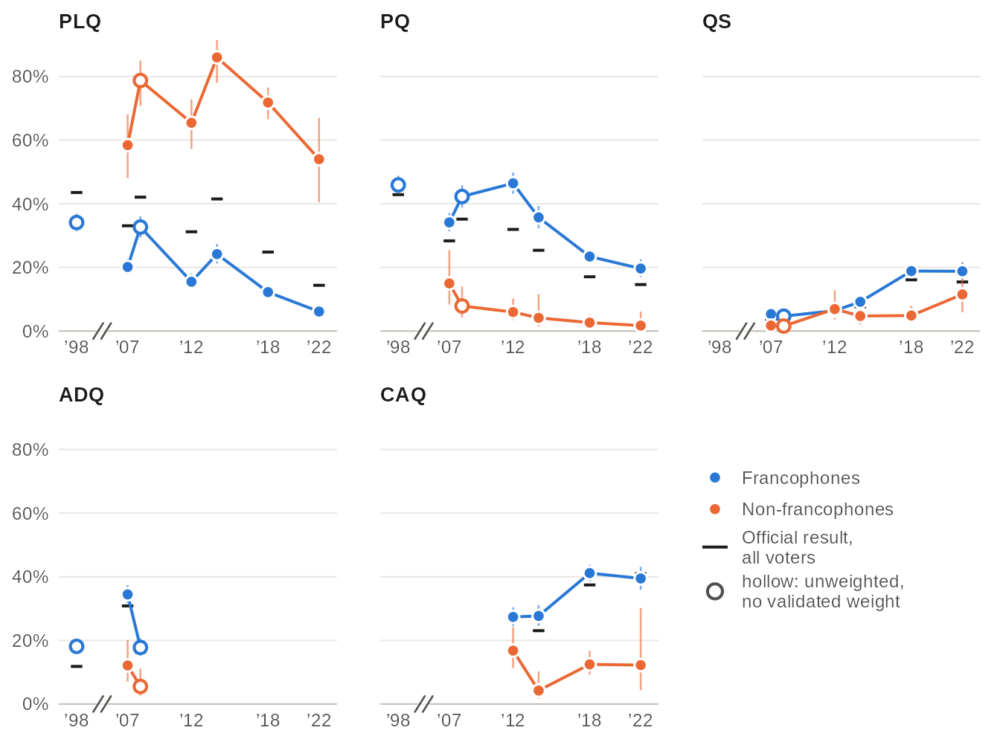
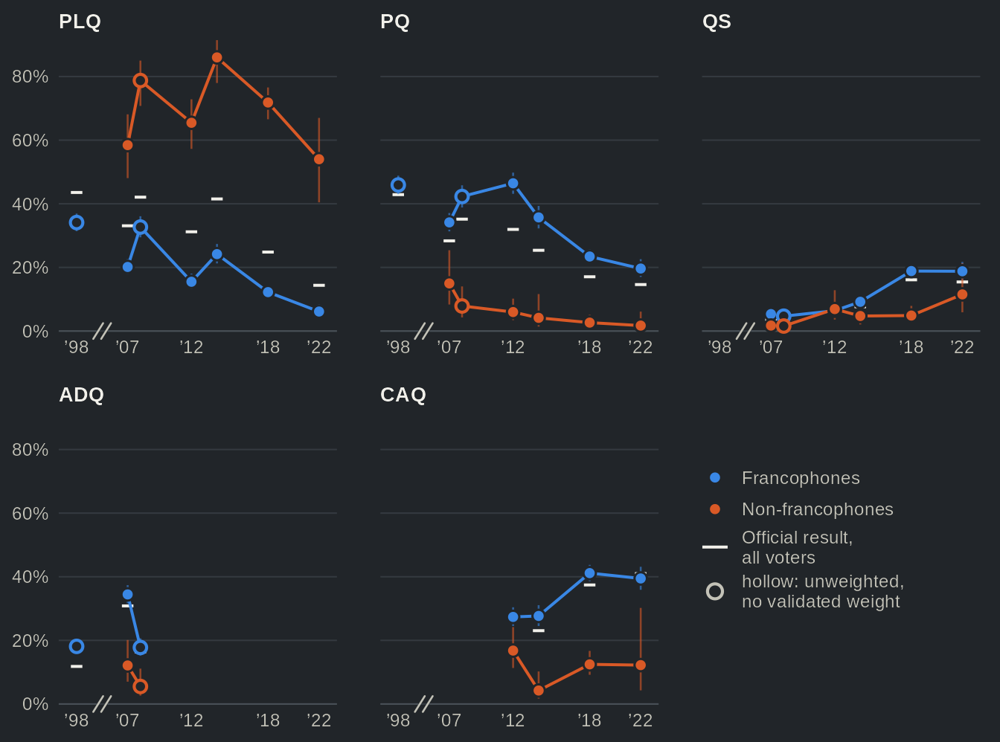
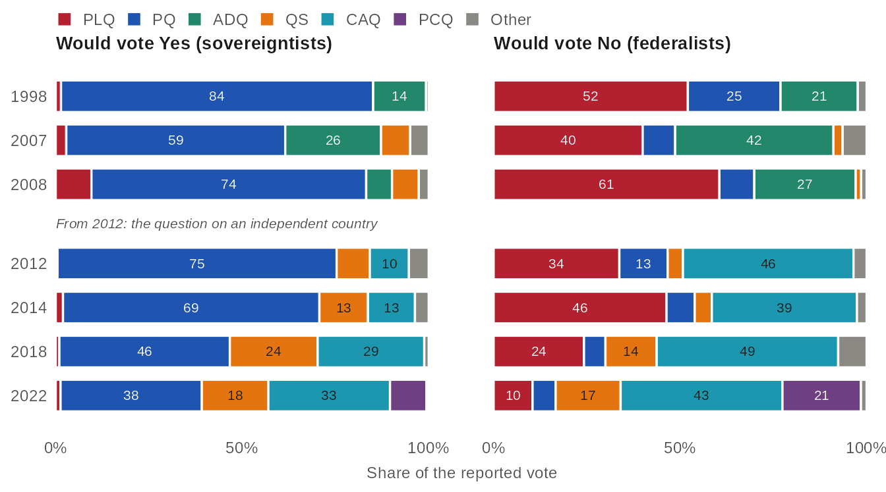
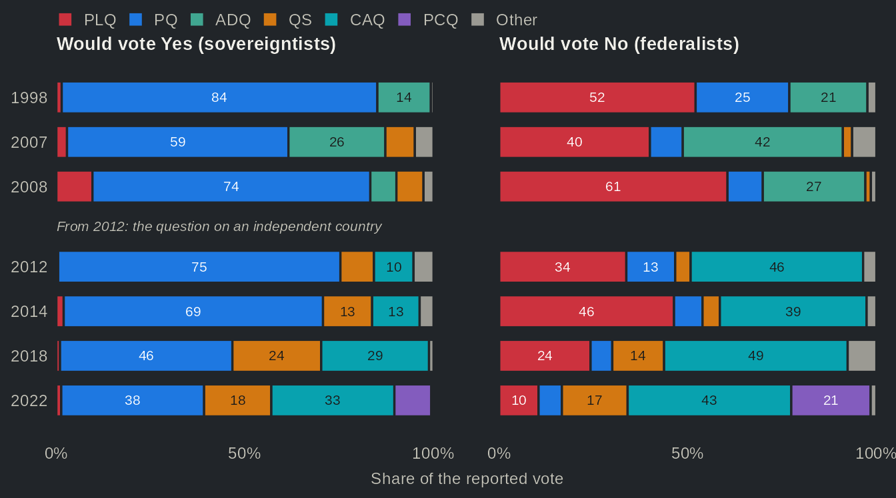

From two parties to four: Quebec's party system, 1998-2022
Source:vignettes/articles/realignment.Rmd
realignment.RmdThis page downloads 11 studies (about 16 MB) the
first time it runs. options(qesR.cache = "disk") keeps them
on disk for later sessions.
For about three decades, Quebec’s party system rested on the sovereignty question. From the 1970s on, the Parti Québécois (PQ) and the Parti libéral du Québec (PLQ) alternated in power, and where Quebecers stood on independence went a long way toward explaining how they voted. In 1998 the two parties still took 86% of the valid votes. However, after the breakthrough of the Action démocratique du Québec (ADQ) in 2007, Bélanger and Nadeau (2009) asked whether the recent change in voters’ behaviour was a passing incident or a lasting transformation of Quebec’s political landscape. The rise of Québec solidaire (QS) and of the Coalition avenir Québec (CAQ) has since settled part of that question. In 2022 five parties each took more than 12% of the vote, and the effective number of parties (Laakso and Taagepera 1979) rose from 2.6 in 1998 to 4.0, the equivalent of four parties of equal size. It is now commonplace to say that the system has fragmented, and the 2018 election, which ended the alternation of the PQ and the PLQ in power, is the starting point of recent work on the “new” Quebec voter (Bélanger et al. 2022). The official results tell us how much the system fragmented. They do not tell us among whom, nor whether the sovereignty question still organizes the vote.
The Quebec Election Studies give a fairly clear answer to both questions. First, the fragmentation is concentrated among francophones. From the first Quebec Election Study, in 2007, to 2022, their effective number of parties went from 3.5 to 3.9. The 1998 polls put it lower, at 2.8, but they surveyed francophones only and have no validated weight, so that point is a rough guide. Non-francophones, by contrast, kept voting Liberal until 2018: 72% of them supported the PLQ that year, compared to 12% of francophones. Second, the sovereignty question still divides the francophone vote, but it no longer channels it into two parties. Since 2012 sovereigntists have almost never voted PLQ and federalists have rarely voted PQ, yet the share of francophones who voted for the party of their own camp fell from 55% in 2012 to 22% in 2022. In other words, knowing where a francophone voter stands on independence now tells us more about the party they will not choose than about the one they will. The idea that the sovereignty question has faded from Quebec elections therefore finds only mixed support.
The francophone vote fragmented first


Source: Quebec Election Studies (one per election) and, for 1998, the CROP and CREATEC polls, which interviewed francophones only, each by its own definition (mother tongue for CREATEC, the language spoken most often at home for CROP); official results of Élections Québec. The effective number of parties (Laakso and Taagepera 1979) is 1 divided by the sum of the squared vote shares; the smaller parties are grouped into a single category, other parties. Bands: 95% confidence intervals. Hollow dots (1998, 2008): unweighted, no validated weight. The x axis is in years, with a break between 1998 and 2007.
Table view
| Election | Study | Group | Effective number [95% CI] | n | Official, all voters | Weighting |
|---|---|---|---|---|---|---|
| 1998 | 1998 polls | Francophones | 2.78 [2.67, 2.88] | 1126 | 2.58 | unweighted: no validated weight |
| 2007 | QES 2007 | Francophones | 3.54 [3.39, 3.70] | 1525 | 3.47 | weighted |
| 2007 | QES 2007 | Non-francophones | 2.53 [1.94, 3.12] | 163 | 3.47 | weighted |
| 2007 | 2007 panel | Francophones | 3.45 [3.34, 3.56] | 1337 | 3.47 | unweighted: no validated weight |
| 2007 | 2007 panel | Non-francophones | 1.78 [1.49, 2.06] | 155 | 3.47 | unweighted: no validated weight |
| 2008 | QES 2008 | Francophones | 3.12 [2.96, 3.29] | 771 | 3.03 | unweighted: no validated weight |
| 2008 | QES 2008 | Non-francophones | 1.58 [1.32, 1.84] | 127 | 3.03 | unweighted: no validated weight |
| 2012 | QES 2012 | Francophones | 3.12 [2.93, 3.31] | 1094 | 3.60 | weighted |
| 2012 | QES 2012 | Non-francophones | 2.14 [1.75, 2.53] | 180 | 3.60 | weighted |
| 2012 | 2012 panel | Francophones | 3.42 [3.20, 3.64] | 576 | 3.60 | unweighted: no validated weight |
| 2012 | 2012 panel | Non-francophones | 2.31 [1.59, 3.03] | 57 | 3.60 | unweighted: no validated weight |
| 2014 | QES 2014 | Francophones | 3.68 [3.51, 3.84] | 981 | 3.38 | weighted |
| 2014 | QES 2014 | Non-francophones | 1.34 [1.15, 1.54] | 201 | 3.38 | weighted |
| 2018 | QES 2018 | Francophones | 3.62 [3.45, 3.78] | 1656 | 3.88 | weighted |
| 2018 | QES 2018 | Non-francophones | 1.85 [1.63, 2.06] | 359 | 3.88 | weighted |
| 2018 | 2018 panel | Francophones | 3.48 [3.11, 3.85] | 560 | 3.88 | weighted |
| 2018 | 2018 panel | Non-francophones | 2.02 [1.64, 2.40] | 143 | 3.88 | weighted |
| 2022 | QES 2022 | Francophones | 3.92 [3.64, 4.20] | 883 | 3.99 | weighted |
| 2022 | QES 2022 | Non-francophones | 2.93 [1.94, 3.92] | 121 | 3.99 | weighted |
The two survey lines do not follow the same path. Among francophones the effective number of parties rose over the period, though not steadily. It reached a first peak in 2007 (3.5), the year of the ADQ’s breakthrough, fell back to 3.1 in 2012, and has been no lower than 3.6 since 2014. Among non-francophones it was 2.5 in 2007, when the PLQ took 58% of their vote, and from 2008 to 2018 it stayed between 1.3 and 2.1, a vote largely dominated by the PLQ. It reached 2.9 in 2022, when the PLQ fell to 54% of their vote. That said, only 121 non-francophone voters answered that year, and the interval runs from 1.9 to 3.9, wide enough to include the 2007 value. The rise is clear against the 2008 to 2018 elections; its size is not.
The survey lines run close to the official one, but not on it. Surveys over-report some parties and under-report others (see Survey vs official results). In 2022, for instance, 33% of respondents reported a vote for the CAQ, against 41% of the ballots, so the survey makes the 2022 vote look more fragmented than it was (4.7 effective parties among all respondents, 4.0 officially). The survey lines therefore say more about the gap between the two groups, and how it changed, than about the level of either.
Party by party, the language divide held


Source: Quebec Election Studies (one per election) and, for 1998, the CROP and CREATEC polls (francophones only). Tick: official share of valid votes, all voters. Bars: 95% confidence intervals. Hollow dots (1998, 2008): unweighted, no validated weight. Groups of fewer than 30 respondents are not drawn. The ADQ merged into the CAQ in 2012; the two are kept apart here. The PCQ and the smaller parties are in the table view.
Table view
| Party | Election | Study | Group | Share of reported vote [95% CI] | n | Official, all voters | Weighting |
|---|---|---|---|---|---|---|---|
| PLQ | 1998 | 1998 polls | Francophones | 34.1 [31.4, 36.9] | 1126 | 43.6 | unweighted: no validated weight |
| PLQ | 2007 | QES 2007 | Francophones | 20.1 [17.9, 22.6] | 1525 | 33.1 | weighted |
| PLQ | 2007 | QES 2007 | Non-francophones | 58.4 [48.1, 68.1] | 163 | 33.1 | weighted |
| PLQ | 2007 | 2007 panel | Francophones | 23.5 [21.3, 25.8] | 1337 | 33.1 | unweighted: no validated weight |
| PLQ | 2007 | 2007 panel | Non-francophones | 73.5 [66.1, 79.9] | 155 | 33.1 | unweighted: no validated weight |
| PLQ | 2008 | QES 2008 | Francophones | 32.7 [29.5, 36.1] | 771 | 42.1 | unweighted: no validated weight |
| PLQ | 2008 | QES 2008 | Non-francophones | 78.7 [70.8, 85.0] | 127 | 42.1 | unweighted: no validated weight |
| PLQ | 2012 | QES 2012 | Francophones | 15.5 [13.2, 18.0] | 1094 | 31.2 | weighted |
| PLQ | 2012 | QES 2012 | Non-francophones | 65.5 [57.3, 72.8] | 180 | 31.2 | weighted |
| PLQ | 2012 | 2012 panel | Francophones | 22.7 [19.5, 26.3] | 576 | 31.2 | unweighted: no validated weight |
| PLQ | 2012 | 2012 panel | Non-francophones | 63.2 [50.0, 74.6] | 57 | 31.2 | unweighted: no validated weight |
| PLQ | 2014 | QES 2014 | Francophones | 24.2 [21.3, 27.4] | 981 | 41.5 | weighted |
| PLQ | 2014 | QES 2014 | Non-francophones | 86.0 [78.0, 91.4] | 201 | 41.5 | weighted |
| PLQ | 2018 | QES 2018 | Francophones | 12.2 [10.7, 13.9] | 1656 | 24.8 | weighted |
| PLQ | 2018 | QES 2018 | Non-francophones | 71.8 [66.6, 76.6] | 359 | 24.8 | weighted |
| PLQ | 2018 | 2018 panel | Francophones | 16.1 [13.0, 19.7] | 560 | 24.8 | weighted |
| PLQ | 2018 | 2018 panel | Non-francophones | 67.8 [59.0, 75.5] | 143 | 24.8 | weighted |
| PLQ | 2022 | QES 2022 | Francophones | 6.1 [4.4, 8.4] | 883 | 14.4 | weighted |
| PLQ | 2022 | QES 2022 | Non-francophones | 54.0 [40.5, 67.0] | 121 | 14.4 | weighted |
| PQ | 1998 | 1998 polls | Francophones | 45.9 [43.0, 48.8] | 1126 | 42.9 | unweighted: no validated weight |
| PQ | 2007 | QES 2007 | Francophones | 34.1 [31.3, 37.1] | 1525 | 28.3 | weighted |
| PQ | 2007 | QES 2007 | Non-francophones | 15.0 [8.3, 25.4] | 163 | 28.3 | weighted |
| PQ | 2007 | 2007 panel | Francophones | 33.4 [31.0, 36.0] | 1337 | 28.3 | unweighted: no validated weight |
| PQ | 2007 | 2007 panel | Non-francophones | 7.7 [4.4, 13.1] | 155 | 28.3 | unweighted: no validated weight |
| PQ | 2008 | QES 2008 | Francophones | 42.3 [38.8, 45.8] | 771 | 35.2 | unweighted: no validated weight |
| PQ | 2008 | QES 2008 | Non-francophones | 7.9 [4.3, 14.0] | 127 | 35.2 | unweighted: no validated weight |
| PQ | 2012 | QES 2012 | Francophones | 46.4 [43.1, 49.8] | 1094 | 31.9 | weighted |
| PQ | 2012 | QES 2012 | Non-francophones | 6.0 [3.4, 10.2] | 180 | 31.9 | weighted |
| PQ | 2012 | 2012 panel | Francophones | 41.3 [37.4, 45.4] | 576 | 31.9 | unweighted: no validated weight |
| PQ | 2012 | 2012 panel | Non-francophones | 8.8 [3.7, 19.4] | 57 | 31.9 | unweighted: no validated weight |
| PQ | 2014 | QES 2014 | Francophones | 35.7 [32.3, 39.3] | 981 | 25.4 | weighted |
| PQ | 2014 | QES 2014 | Non-francophones | 4.1 [1.4, 11.6] | 201 | 25.4 | weighted |
| PQ | 2018 | QES 2018 | Francophones | 23.4 [21.3, 25.7] | 1656 | 17.1 | weighted |
| PQ | 2018 | QES 2018 | Non-francophones | 2.6 [1.4, 5.1] | 359 | 17.1 | weighted |
| PQ | 2018 | 2018 panel | Francophones | 18.0 [14.6, 22.1] | 560 | 17.1 | weighted |
| PQ | 2018 | 2018 panel | Non-francophones | 2.9 [1.1, 7.5] | 143 | 17.1 | weighted |
| PQ | 2022 | QES 2022 | Francophones | 19.6 [17.0, 22.6] | 883 | 14.6 | weighted |
| PQ | 2022 | QES 2022 | Non-francophones | 1.7 [0.5, 6.1] | 121 | 14.6 | weighted |
| ADQ | 1998 | 1998 polls | Francophones | 18.1 [16.0, 20.5] | 1126 | 11.8 | unweighted: no validated weight |
| ADQ | 2007 | QES 2007 | Francophones | 34.4 [31.7, 37.4] | 1525 | 30.8 | weighted |
| ADQ | 2007 | QES 2007 | Non-francophones | 12.1 [7.0, 20.1] | 163 | 30.8 | weighted |
| ADQ | 2007 | 2007 panel | Francophones | 34.6 [32.1, 37.1] | 1337 | 30.8 | unweighted: no validated weight |
| ADQ | 2007 | 2007 panel | Non-francophones | 11.6 [7.4, 17.7] | 155 | 30.8 | unweighted: no validated weight |
| ADQ | 2008 | QES 2008 | Francophones | 17.8 [15.2, 20.6] | 771 | 16.4 | unweighted: no validated weight |
| ADQ | 2008 | QES 2008 | Non-francophones | 5.5 [2.6, 11.1] | 127 | 16.4 | unweighted: no validated weight |
| QS | 2007 | QES 2007 | Francophones | 5.3 [4.0, 7.0] | 1525 | 3.6 | weighted |
| QS | 2007 | QES 2007 | Non-francophones | 1.7 [0.4, 7.1] | 163 | 3.6 | weighted |
| QS | 2007 | 2007 panel | Francophones | 4.0 [3.0, 5.2] | 1337 | 3.6 | unweighted: no validated weight |
| QS | 2007 | 2007 panel | Non-francophones | 2.6 [1.0, 6.7] | 155 | 3.6 | unweighted: no validated weight |
| QS | 2008 | QES 2008 | Francophones | 4.7 [3.4, 6.4] | 771 | 3.8 | unweighted: no validated weight |
| QS | 2008 | QES 2008 | Non-francophones | 1.6 [0.4, 6.1] | 127 | 3.8 | unweighted: no validated weight |
| QS | 2012 | QES 2012 | Francophones | 6.4 [5.0, 8.1] | 1094 | 6.0 | weighted |
| QS | 2012 | QES 2012 | Non-francophones | 6.9 [3.6, 12.8] | 180 | 6.0 | weighted |
| QS | 2012 | 2012 panel | Francophones | 6.9 [5.1, 9.3] | 576 | 6.0 | unweighted: no validated weight |
| QS | 2012 | 2012 panel | Non-francophones | 8.8 [3.7, 19.4] | 57 | 6.0 | unweighted: no validated weight |
| QS | 2014 | QES 2014 | Francophones | 9.2 [7.5, 11.2] | 981 | 7.6 | weighted |
| QS | 2014 | QES 2014 | Non-francophones | 4.7 [2.1, 10.4] | 201 | 7.6 | weighted |
| QS | 2018 | QES 2018 | Francophones | 18.9 [16.9, 20.9] | 1656 | 16.1 | weighted |
| QS | 2018 | QES 2018 | Non-francophones | 4.9 [3.0, 7.9] | 359 | 16.1 | weighted |
| QS | 2018 | 2018 panel | Francophones | 14.7 [11.4, 18.9] | 560 | 16.1 | weighted |
| QS | 2018 | 2018 panel | Non-francophones | 5.3 [2.8, 9.9] | 143 | 16.1 | weighted |
| QS | 2022 | QES 2022 | Francophones | 18.8 [16.2, 21.7] | 883 | 15.4 | weighted |
| QS | 2022 | QES 2022 | Non-francophones | 11.5 [5.9, 21.3] | 121 | 15.4 | weighted |
| CAQ | 2012 | QES 2012 | Francophones | 27.4 [24.5, 30.4] | 1094 | 27.1 | weighted |
| CAQ | 2012 | QES 2012 | Non-francophones | 16.8 [11.3, 24.2] | 180 | 27.1 | weighted |
| CAQ | 2012 | 2012 panel | Francophones | 25.2 [21.8, 28.9] | 576 | 27.1 | unweighted: no validated weight |
| CAQ | 2012 | 2012 panel | Non-francophones | 10.5 [4.8, 21.5] | 57 | 27.1 | unweighted: no validated weight |
| CAQ | 2014 | QES 2014 | Francophones | 27.7 [24.5, 31.1] | 981 | 23.1 | weighted |
| CAQ | 2014 | QES 2014 | Non-francophones | 4.2 [1.7, 10.2] | 201 | 23.1 | weighted |
| CAQ | 2018 | QES 2018 | Francophones | 41.1 [38.6, 43.7] | 1656 | 37.4 | weighted |
| CAQ | 2018 | QES 2018 | Non-francophones | 12.5 [9.2, 16.7] | 359 | 37.4 | weighted |
| CAQ | 2018 | 2018 panel | Francophones | 45.1 [40.2, 50.2] | 560 | 37.4 | weighted |
| CAQ | 2018 | 2018 panel | Non-francophones | 16.2 [10.5, 24.2] | 143 | 37.4 | weighted |
| CAQ | 2022 | QES 2022 | Francophones | 39.5 [35.9, 43.1] | 883 | 41.0 | weighted |
| CAQ | 2022 | QES 2022 | Non-francophones | 12.2 [4.3, 30.2] | 121 | 41.0 | weighted |
| PCQ | 2022 | QES 2022 | Francophones | 14.7 [12.2, 17.6] | 883 | 12.9 | weighted |
| PCQ | 2022 | QES 2022 | Non-francophones | 9.4 [5.1, 16.7] | 121 | 12.9 | weighted |
| Other | 1998 | 1998 polls | Francophones | 1.9 [1.2, 2.8] | 1126 | 1.8 | unweighted: no validated weight |
| Other | 2007 | QES 2007 | Francophones | 5.9 [4.6, 7.6] | 1525 | 4.1 | weighted |
| Other | 2007 | QES 2007 | Non-francophones | 12.8 [7.3, 21.4] | 163 | 4.1 | weighted |
| Other | 2007 | 2007 panel | Francophones | 4.6 [3.6, 5.8] | 1337 | 4.1 | unweighted: no validated weight |
| Other | 2007 | 2007 panel | Non-francophones | 4.5 [2.2, 9.2] | 155 | 4.1 | unweighted: no validated weight |
| Other | 2008 | QES 2008 | Francophones | 2.6 [1.7, 4.0] | 771 | 2.6 | unweighted: no validated weight |
| Other | 2008 | QES 2008 | Non-francophones | 6.3 [3.2, 12.1] | 127 | 2.6 | unweighted: no validated weight |
| Other | 2012 | QES 2012 | Francophones | 4.3 [3.3, 5.7] | 1094 | 3.6 | weighted |
| Other | 2012 | QES 2012 | Non-francophones | 4.9 [2.5, 9.4] | 180 | 3.6 | weighted |
| Other | 2012 | 2012 panel | Francophones | 3.8 [2.5, 5.7] | 576 | 3.6 | unweighted: no validated weight |
| Other | 2012 | 2012 panel | Non-francophones | 8.8 [3.7, 19.4] | 57 | 3.6 | unweighted: no validated weight |
| Other | 2014 | QES 2014 | Francophones | 3.2 [2.2, 4.7] | 981 | 2.0 | weighted |
| Other | 2014 | QES 2014 | Non-francophones | 0.9 [0.3, 2.4] | 201 | 2.0 | weighted |
| Other | 2018 | QES 2018 | Francophones | 4.3 [3.3, 5.6] | 1656 | 3.1 | weighted |
| Other | 2018 | QES 2018 | Non-francophones | 8.2 [5.6, 11.8] | 359 | 3.1 | weighted |
| Other | 2018 | 2018 panel | Francophones | 6.0 [4.0, 9.1] | 560 | 3.1 | weighted |
| Other | 2018 | 2018 panel | Non-francophones | 7.7 [4.3, 13.5] | 143 | 3.1 | weighted |
| Other | 2022 | QES 2022 | Francophones | 1.3 [0.7, 2.5] | 883 | 1.7 | weighted |
| Other | 2022 | QES 2022 | Non-francophones | 11.2 [5.1, 22.7] | 121 | 1.7 | weighted |
The PLQ remained the party of non-francophones. It took 58% of their vote in 2007, 86% in 2014 and still 54% in 2022, its lowest share over the period. Among francophones, however, its share fell from 34% in 1998 to 6% in 2022, well below its official result of 14% that year. The PQ never had many non-francophone voters (15% in 2007) and kept almost none (2% in 2022).
The CAQ’s victories, for their part, are francophone victories. In 2018 it won 41% of the francophone vote and 12% of the others, and in 2022 39% and 12%. Like the ADQ before it, it barely reaches non-francophones. The two parties that came closest to crossing the language divide in 2022 are the two whose breakthrough is most recent. Québec solidaire, which grew among francophones first (19% in 2018), took 19% of francophones and 12% of the others; the Parti conservateur du Québec (PCQ) took 15% and 9%. With so few non-francophone respondents these gaps are uncertain. Using the same 2022 study, Bélanger et al. (2025) find that, unlike most other parties, the PCQ drew as much from non-francophones as from francophones once other factors are held constant; the raw shares shown here do not hold those factors constant. The new parties thus divided the francophone vote first. Among non-francophones the break came only in 2022, and it rests on 121 respondents.
Sovereignty still divides the francophone vote, but no longer channels it


Source: Quebec Election Studies (one per election) and, for 1998, the CROP poll; francophone respondents who reported a vote and chose a side. From 1998 to 2008 the question is the one of the 1995 referendum, which offered a partnership with Canada, with the undecided asked which way they lean; from 2012 on, it asks about an independent country. The Yes side is about as large among these francophones in 2008 (52%) as in 2012 (52%), but the two questions may not draw the same voters, so compare the rows within each period. Labels show shares of 10% or more; the 95% confidence intervals and the Durand panels are in the table view. 1998 and 2008: unweighted, no validated weight.
Table view
| Election | Study | Question | Side | Party | Share of reported vote [95% CI] | n | Weighting |
|---|---|---|---|---|---|---|---|
| 1998 | 1998 polls | The 1995 question (partnership) | Would vote Yes (sovereigntists) | PLQ | 1.4 [0.4, 5.5] | 141 | unweighted: no validated weight |
| 1998 | 1998 polls | The 1995 question (partnership) | Would vote Yes (sovereigntists) | PQ | 83.7 [76.6, 88.9] | 141 | unweighted: no validated weight |
| 1998 | 1998 polls | The 1995 question (partnership) | Would vote Yes (sovereigntists) | ADQ | 14.2 [9.3, 21.0] | 141 | unweighted: no validated weight |
| 1998 | 1998 polls | The 1995 question (partnership) | Would vote Yes (sovereigntists) | Other | 0.7 [0.1, 4.9] | 141 | unweighted: no validated weight |
| 1998 | 1998 polls | The 1995 question (partnership) | Would vote No (federalists) | PLQ | 52.1 [44.5, 59.5] | 169 | unweighted: no validated weight |
| 1998 | 1998 polls | The 1995 question (partnership) | Would vote No (federalists) | PQ | 24.9 [18.9, 31.9] | 169 | unweighted: no validated weight |
| 1998 | 1998 polls | The 1995 question (partnership) | Would vote No (federalists) | ADQ | 20.7 [15.3, 27.5] | 169 | unweighted: no validated weight |
| 1998 | 1998 polls | The 1995 question (partnership) | Would vote No (federalists) | Other | 2.4 [0.9, 6.1] | 169 | unweighted: no validated weight |
| 2007 | QES 2007 | The 1995 question (partnership) | Would vote Yes (sovereigntists) | PLQ | 2.8 [1.7, 4.7] | 715 | weighted |
| 2007 | QES 2007 | The 1995 question (partnership) | Would vote Yes (sovereigntists) | PQ | 58.7 [54.3, 63.0] | 715 | weighted |
| 2007 | QES 2007 | The 1995 question (partnership) | Would vote Yes (sovereigntists) | ADQ | 25.7 [22.0, 29.7] | 715 | weighted |
| 2007 | QES 2007 | The 1995 question (partnership) | Would vote Yes (sovereigntists) | QS | 7.8 [5.7, 10.7] | 715 | weighted |
| 2007 | QES 2007 | The 1995 question (partnership) | Would vote Yes (sovereigntists) | Other | 5.0 [3.4, 7.1] | 715 | weighted |
| 2007 | QES 2007 | The 1995 question (partnership) | Would vote No (federalists) | PLQ | 40.0 [35.8, 44.2] | 741 | weighted |
| 2007 | QES 2007 | The 1995 question (partnership) | Would vote No (federalists) | PQ | 8.7 [6.6, 11.4] | 741 | weighted |
| 2007 | QES 2007 | The 1995 question (partnership) | Would vote No (federalists) | ADQ | 42.4 [38.2, 46.7] | 741 | weighted |
| 2007 | QES 2007 | The 1995 question (partnership) | Would vote No (federalists) | QS | 2.5 [1.3, 4.5] | 741 | weighted |
| 2007 | QES 2007 | The 1995 question (partnership) | Would vote No (federalists) | Other | 6.4 [4.5, 9.1] | 741 | weighted |
| 2007 | 2007 panel | The 1995 question (partnership) | Would vote Yes (sovereigntists) | PLQ | 5.0 [3.4, 7.2] | 541 | unweighted: no validated weight |
| 2007 | 2007 panel | The 1995 question (partnership) | Would vote Yes (sovereigntists) | PQ | 56.0 [51.8, 60.1] | 541 | unweighted: no validated weight |
| 2007 | 2007 panel | The 1995 question (partnership) | Would vote Yes (sovereigntists) | ADQ | 28.1 [24.5, 32.0] | 541 | unweighted: no validated weight |
| 2007 | 2007 panel | The 1995 question (partnership) | Would vote Yes (sovereigntists) | QS | 6.3 [4.5, 8.7] | 541 | unweighted: no validated weight |
| 2007 | 2007 panel | The 1995 question (partnership) | Would vote Yes (sovereigntists) | Other | 4.6 [3.1, 6.7] | 541 | unweighted: no validated weight |
| 2007 | 2007 panel | The 1995 question (partnership) | Would vote No (federalists) | PLQ | 44.9 [40.6, 49.2] | 517 | unweighted: no validated weight |
| 2007 | 2007 panel | The 1995 question (partnership) | Would vote No (federalists) | PQ | 9.9 [7.6, 12.8] | 517 | unweighted: no validated weight |
| 2007 | 2007 panel | The 1995 question (partnership) | Would vote No (federalists) | ADQ | 39.1 [35.0, 43.3] | 517 | unweighted: no validated weight |
| 2007 | 2007 panel | The 1995 question (partnership) | Would vote No (federalists) | QS | 1.4 [0.6, 2.8] | 517 | unweighted: no validated weight |
| 2007 | 2007 panel | The 1995 question (partnership) | Would vote No (federalists) | Other | 4.8 [3.3, 7.1] | 517 | unweighted: no validated weight |
| 2008 | QES 2008 | The 1995 question (partnership) | Would vote Yes (sovereigntists) | PLQ | 9.6 [7.0, 13.0] | 376 | unweighted: no validated weight |
| 2008 | QES 2008 | The 1995 question (partnership) | Would vote Yes (sovereigntists) | PQ | 73.7 [69.0, 77.9] | 376 | unweighted: no validated weight |
| 2008 | QES 2008 | The 1995 question (partnership) | Would vote Yes (sovereigntists) | ADQ | 6.9 [4.7, 10.0] | 376 | unweighted: no validated weight |
| 2008 | QES 2008 | The 1995 question (partnership) | Would vote Yes (sovereigntists) | QS | 7.2 [5.0, 10.3] | 376 | unweighted: no validated weight |
| 2008 | QES 2008 | The 1995 question (partnership) | Would vote Yes (sovereigntists) | Other | 2.7 [1.4, 4.9] | 376 | unweighted: no validated weight |
| 2008 | QES 2008 | The 1995 question (partnership) | Would vote No (federalists) | PLQ | 60.5 [55.2, 65.6] | 342 | unweighted: no validated weight |
| 2008 | QES 2008 | The 1995 question (partnership) | Would vote No (federalists) | PQ | 9.4 [6.7, 12.9] | 342 | unweighted: no validated weight |
| 2008 | QES 2008 | The 1995 question (partnership) | Would vote No (federalists) | ADQ | 27.2 [22.7, 32.2] | 342 | unweighted: no validated weight |
| 2008 | QES 2008 | The 1995 question (partnership) | Would vote No (federalists) | QS | 1.5 [0.6, 3.5] | 342 | unweighted: no validated weight |
| 2008 | QES 2008 | The 1995 question (partnership) | Would vote No (federalists) | Other | 1.5 [0.6, 3.5] | 342 | unweighted: no validated weight |
| 2012 | QES 2012 | An independent country | Would vote Yes (sovereigntists) | PLQ | 0.5 [0.1, 1.9] | 514 | weighted |
| 2012 | QES 2012 | An independent country | Would vote Yes (sovereigntists) | PQ | 74.8 [70.5, 78.7] | 514 | weighted |
| 2012 | QES 2012 | An independent country | Would vote Yes (sovereigntists) | QS | 8.9 [6.5, 12.0] | 514 | weighted |
| 2012 | QES 2012 | An independent country | Would vote Yes (sovereigntists) | CAQ | 10.5 [7.9, 13.8] | 514 | weighted |
| 2012 | QES 2012 | An independent country | Would vote Yes (sovereigntists) | Other | 5.3 [3.7, 7.5] | 514 | weighted |
| 2012 | QES 2012 | An independent country | Would vote No (federalists) | PLQ | 33.7 [29.1, 38.6] | 475 | weighted |
| 2012 | QES 2012 | An independent country | Would vote No (federalists) | PQ | 13.0 [10.0, 16.7] | 475 | weighted |
| 2012 | QES 2012 | An independent country | Would vote No (federalists) | QS | 4.1 [2.6, 6.4] | 475 | weighted |
| 2012 | QES 2012 | An independent country | Would vote No (federalists) | CAQ | 45.7 [40.8, 50.7] | 475 | weighted |
| 2012 | QES 2012 | An independent country | Would vote No (federalists) | Other | 3.5 [2.2, 5.6] | 475 | weighted |
| 2012 | 2012 panel | A sovereign country | Would vote Yes (sovereigntists) | PLQ | 1.4 [0.5, 4.3] | 214 | unweighted: no validated weight |
| 2012 | 2012 panel | A sovereign country | Would vote Yes (sovereigntists) | PQ | 72.4 [66.1, 78.0] | 214 | unweighted: no validated weight |
| 2012 | 2012 panel | A sovereign country | Would vote Yes (sovereigntists) | QS | 12.1 [8.4, 17.3] | 214 | unweighted: no validated weight |
| 2012 | 2012 panel | A sovereign country | Would vote Yes (sovereigntists) | CAQ | 9.3 [6.1, 14.0] | 214 | unweighted: no validated weight |
| 2012 | 2012 panel | A sovereign country | Would vote Yes (sovereigntists) | Other | 4.7 [2.5, 8.5] | 214 | unweighted: no validated weight |
| 2012 | 2012 panel | A sovereign country | Would vote No (federalists) | PLQ | 39.7 [34.4, 45.2] | 315 | unweighted: no validated weight |
| 2012 | 2012 panel | A sovereign country | Would vote No (federalists) | PQ | 19.4 [15.4, 24.1] | 315 | unweighted: no validated weight |
| 2012 | 2012 panel | A sovereign country | Would vote No (federalists) | QS | 2.9 [1.5, 5.4] | 315 | unweighted: no validated weight |
| 2012 | 2012 panel | A sovereign country | Would vote No (federalists) | CAQ | 34.6 [29.6, 40.0] | 315 | unweighted: no validated weight |
| 2012 | 2012 panel | A sovereign country | Would vote No (federalists) | Other | 3.5 [1.9, 6.2] | 315 | unweighted: no validated weight |
| 2014 | QES 2014 | An independent country | Would vote Yes (sovereigntists) | PLQ | 1.9 [0.9, 4.2] | 397 | weighted |
| 2014 | QES 2014 | An independent country | Would vote Yes (sovereigntists) | PQ | 68.7 [63.4, 73.6] | 397 | weighted |
| 2014 | QES 2014 | An independent country | Would vote Yes (sovereigntists) | QS | 13.0 [10.1, 16.6] | 397 | weighted |
| 2014 | QES 2014 | An independent country | Would vote Yes (sovereigntists) | CAQ | 12.6 [9.3, 16.9] | 397 | weighted |
| 2014 | QES 2014 | An independent country | Would vote Yes (sovereigntists) | Other | 3.7 [2.0, 6.8] | 397 | weighted |
| 2014 | QES 2014 | An independent country | Would vote No (federalists) | PLQ | 46.4 [41.3, 51.5] | 480 | weighted |
| 2014 | QES 2014 | An independent country | Would vote No (federalists) | PQ | 7.6 [5.2, 10.9] | 480 | weighted |
| 2014 | QES 2014 | An independent country | Would vote No (federalists) | QS | 4.6 [2.9, 7.1] | 480 | weighted |
| 2014 | QES 2014 | An independent country | Would vote No (federalists) | CAQ | 38.9 [34.0, 44.1] | 480 | weighted |
| 2014 | QES 2014 | An independent country | Would vote No (federalists) | Other | 2.6 [1.5, 4.4] | 480 | weighted |
| 2018 | QES 2018 | An independent country | Would vote Yes (sovereigntists) | PLQ | 1.0 [0.5, 2.0] | 639 | weighted |
| 2018 | QES 2018 | An independent country | Would vote Yes (sovereigntists) | PQ | 45.7 [41.6, 49.9] | 639 | weighted |
| 2018 | QES 2018 | An independent country | Would vote Yes (sovereigntists) | QS | 23.5 [20.2, 27.2] | 639 | weighted |
| 2018 | QES 2018 | An independent country | Would vote Yes (sovereigntists) | CAQ | 28.6 [24.9, 32.6] | 639 | weighted |
| 2018 | QES 2018 | An independent country | Would vote Yes (sovereigntists) | Other | 1.2 [0.5, 2.6] | 639 | weighted |
| 2018 | QES 2018 | An independent country | Would vote No (federalists) | PLQ | 24.2 [21.2, 27.5] | 773 | weighted |
| 2018 | QES 2018 | An independent country | Would vote No (federalists) | PQ | 5.8 [4.2, 7.8] | 773 | weighted |
| 2018 | QES 2018 | An independent country | Would vote No (federalists) | QS | 13.7 [11.3, 16.6] | 773 | weighted |
| 2018 | QES 2018 | An independent country | Would vote No (federalists) | CAQ | 48.7 [44.9, 52.5] | 773 | weighted |
| 2018 | QES 2018 | An independent country | Would vote No (federalists) | Other | 7.6 [5.7, 10.1] | 773 | weighted |
| 2018 | 2018 panel | Favourable to independence | Would vote Yes (sovereigntists) | PLQ | 3.5 [1.6, 7.2] | 200 | weighted |
| 2018 | 2018 panel | Favourable to independence | Would vote Yes (sovereigntists) | PQ | 34.5 [27.3, 42.4] | 200 | weighted |
| 2018 | 2018 panel | Favourable to independence | Would vote Yes (sovereigntists) | QS | 19.6 [14.2, 26.6] | 200 | weighted |
| 2018 | 2018 panel | Favourable to independence | Would vote Yes (sovereigntists) | CAQ | 39.2 [31.2, 47.8] | 200 | weighted |
| 2018 | 2018 panel | Favourable to independence | Would vote Yes (sovereigntists) | Other | 3.3 [1.3, 8.0] | 200 | weighted |
| 2018 | 2018 panel | Favourable to independence | Would vote No (federalists) | PLQ | 25.4 [20.3, 31.3] | 315 | weighted |
| 2018 | 2018 panel | Favourable to independence | Would vote No (federalists) | PQ | 6.3 [3.6, 10.6] | 315 | weighted |
| 2018 | 2018 panel | Favourable to independence | Would vote No (federalists) | QS | 12.8 [8.4, 19.2] | 315 | weighted |
| 2018 | 2018 panel | Favourable to independence | Would vote No (federalists) | CAQ | 46.9 [40.1, 53.7] | 315 | weighted |
| 2018 | 2018 panel | Favourable to independence | Would vote No (federalists) | Other | 8.6 [5.3, 13.6] | 315 | weighted |
| 2022 | QES 2022 | An independent country | Would vote Yes (sovereigntists) | PLQ | 1.3 [0.5, 3.3] | 335 | weighted |
| 2022 | QES 2022 | An independent country | Would vote Yes (sovereigntists) | PQ | 37.9 [32.4, 43.7] | 335 | weighted |
| 2022 | QES 2022 | An independent country | Would vote Yes (sovereigntists) | QS | 17.8 [13.8, 22.7] | 335 | weighted |
| 2022 | QES 2022 | An independent country | Would vote Yes (sovereigntists) | CAQ | 32.6 [27.1, 38.6] | 335 | weighted |
| 2022 | QES 2022 | An independent country | Would vote Yes (sovereigntists) | PCQ | 9.8 [6.7, 14.2] | 335 | weighted |
| 2022 | QES 2022 | An independent country | Would vote Yes (sovereigntists) | Other | 0.6 [0.1, 2.6] | 335 | weighted |
| 2022 | QES 2022 | An independent country | Would vote No (federalists) | PLQ | 10.4 [7.3, 14.7] | 411 | weighted |
| 2022 | QES 2022 | An independent country | Would vote No (federalists) | PQ | 6.2 [4.1, 9.2] | 411 | weighted |
| 2022 | QES 2022 | An independent country | Would vote No (federalists) | QS | 17.4 [13.9, 21.6] | 411 | weighted |
| 2022 | QES 2022 | An independent country | Would vote No (federalists) | CAQ | 43.4 [38.1, 48.8] | 411 | weighted |
| 2022 | QES 2022 | An independent country | Would vote No (federalists) | PCQ | 21.0 [16.9, 25.8] | 411 | weighted |
| 2022 | QES 2022 | An independent country | Would vote No (federalists) | Other | 1.5 [0.6, 3.8] | 411 | weighted |
Two things stand out. First, the wall between the two old camps holds. From 2012 on, the PLQ never took more than 2% of the francophone sovereigntist vote, and the PQ never more than 13% of the federalist vote. Second, within each camp the old party lost its hold, and not at the same pace. Federalist francophones were the first to leave, though not in a straight line. In 2007 the ADQ already took about as many of them as the PLQ (42% against 40%), and after a brief return to the PLQ in 2008 (61%), the CAQ took 46% of them in 2012. From 2012 to 2022 the PLQ’s share of federalist francophones fell from 34% to 10%, behind the CAQ, the PCQ and even QS. Sovereigntist francophones stayed with the PQ longer. Its share of their vote went from 75% in 2012 to 38% in 2022, and most of that loss came in 2018, when Québec solidaire and the CAQ divided them. As a result, the share of francophones who voted for the party of their camp fell from 55% in 2012 to 22% in 2022 (the table view gives every election).
The party that gained most is the one that sits on neither side of the question. In 2022 the CAQ drew 43% of the federalist francophone vote and 33% of the sovereigntist one. The sovereignty question has therefore not disappeared from Quebec elections; what disappeared is the two-party system that translated it into votes. This echoes Daoust and Gareau-Paquette (2024), who find that in federal elections support for independence remains a key predictor of the vote, its weight stable since 2006 after a fall from the 2000 and 2004 elections. Here, by contrast, what changed is how that division maps onto parties.
What this means
Overall, the Quebec party system did not fragment evenly. The new parties divided the francophone vote, and they did so within each sovereignty camp: the wall between the camps held while the PQ and the PLQ lost their hold on their own side. Two limits deserve mention. First, these are reported votes in separate surveys: they show how groups of voters split at each election, not whether the same people changed parties (the Transitions page follows the same respondents through a campaign). Second, the non-francophone samples are small, between 121 and 359 voters per election, so their estimates move a lot from one election to the next, and the 2022 break among them remains to be confirmed. The next question is whether the francophone vote will settle again around new poles, or whether generational replacement will keep it divided (the sovereignty page follows the birth cohorts).
How the figures are made
Every figure on this page uses one harmonized variable,
vote_choice, restricted to the vote reported after the
election, with mother tongue and the referendum question:
h <- qes_harmonize(
studies = c("qes1998", "qes2007", "qes2007_panel", "qes2008", "qes_crop_2007_2010",
"qes2012", "qes2012_panel", "qes2014", "qes2018", "qes2018_panel", "qes2022"),
targets = c("vote_choice", "lang_mother", "sov_support"),
types = list(vote_choice = "recall"),
missing = "reasons", quiet = TRUE
)Within one study, a weighted share and its confidence interval take
one qes_design() and one call to the survey package:
library(survey)
d18 <- qes_design(h[h$study == "qes2018", ], weight = "weight_post")
d18 <- subset(d18, !is.na(vote_choice) & !is.na(lang_mother))
svyby(~I(vote_choice == "CAQ"), ~lang_mother, d18, svyciprop,
method = "logit", vartype = "ci")
#> lang_mother I(vote_choice == "CAQ") ci_l ci_u
#> French French 0.4114613 0.38603333 0.4373710
#> English English 0.1101960 0.07564846 0.1578270
#> Other Other 0.1717929 0.10011622 0.2788822The figures repeat this for every study. Each estimate is made within one study and never pooled across studies.
Going further
- Bélanger, Éric, and Richard Nadeau. 2009. Le comportement électoral des Québécois. Montréal: Presses de l’Université de Montréal. https://doi.org/10.4000/books.pum.9772
- Bélanger, Éric, Jean-François Daoust, Valérie-Anne Mahéo, and Richard Nadeau. 2022. Le nouvel électeur québécois. Montréal: Presses de l’Université de Montréal. https://doi.org/10.1515/9782760645929
- Bélanger, Éric, Philippe Mongrain, Thomas Gareau-Paquette, and Valérie-Anne Mahéo. 2025. “A Party that Went Viral? The Drivers of Support for the Parti Conservateur du Québec in the 2022 Election.” Canadian Journal of Political Science 58 (2): 277-296. https://doi.org/10.1017/S0008423924000829
- Daoust, Jean-François, and Thomas Gareau-Paquette. 2024. “Is Quebec Independence Still Key in Making Sense of Canadian Elections? A Longitudinal Analysis (2000-2021).” Regional & Federal Studies 34 (5): 781-806. https://doi.org/10.1080/13597566.2023.2233422
- Laakso, Markku, and Rein Taagepera. 1979. “‘Effective’ Number of Parties: A Measure with Application to West Europe.” Comparative Political Studies 12 (1): 3-27. https://doi.org/10.1177/001041407901200101
- Mahéo, Valérie-Anne, and Éric Bélanger. 2018. “Is the Parti Québécois Bound to Disappear? A Study of the Current Generational Dynamics of Electoral Behaviour in Quebec.” Canadian Journal of Political Science 51 (2): 335-356. https://doi.org/10.1017/S0008423917001147
About the data
- Studies. One Quebec Election Study per election (2007, 2008, 2012, 2014, 2018, 2022) and, for 1998, the CROP and CREATEC polls, which surveyed francophones only (CREATEC by mother tongue, CROP by the language of use); qesR has no mother-tongue column for 1998, and this page counts every 1998 respondent as francophone. The table views also include the Durand panel surveys of 2007, 2012 and 2018, which interviewed the same respondents during the campaign and after the election; they are not drawn. The CROP polls of 2007 to 2010 asked no reported vote and are not used.
- Vote. The party respondents said they voted for, asked after the election. Those who did not vote, spoiled their ballot, did not know or refused are left out. A party that a study did not list, or that did not run, is not drawn. The ADQ and the CAQ are kept apart, although they merged in 2012.
- Language. Mother tongue, French against every other answer. In 2022 the question asked for all the languages learned in childhood, and the 146 respondents who named more than one are left out of the language split, as are 115 respondents in 2014 whose answer could not be classed.
- Sovereignty. The side a respondent would take in a referendum, among those who chose one. From 1998 to 2008 the studies asked the 1995 referendum question, and those who hesitated were asked which way they leaned; from 2012 on, the question is about an independent country. In 1998 only the CROP poll asked it. The Durand panels in the table views use their own wordings (see the Question column).
- Weights. Each study’s post-election weight, where it has a validated one (the weights table gives each study’s); the others, 1998 and 2008 among the drawn studies, are unweighted and drawn as hollow dots. The 1998 respondents had first answered pre-election polls and were interviewed again after the election, and that second round over-selected undecided voters and those who would not say how they would vote.